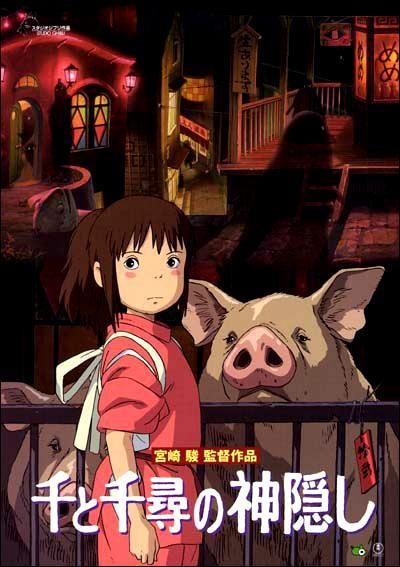
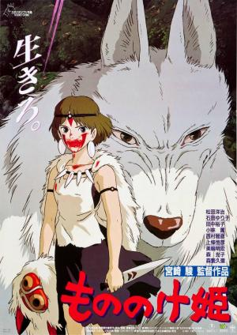
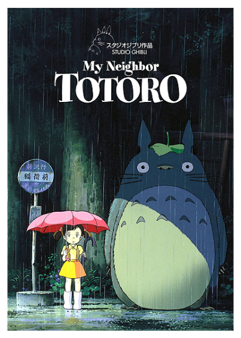
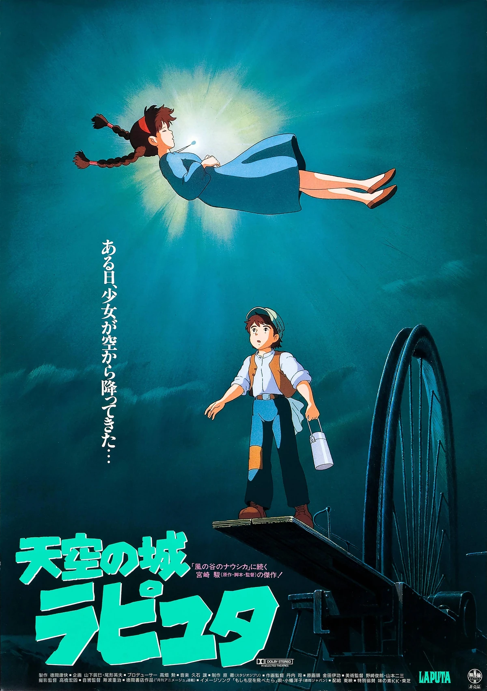
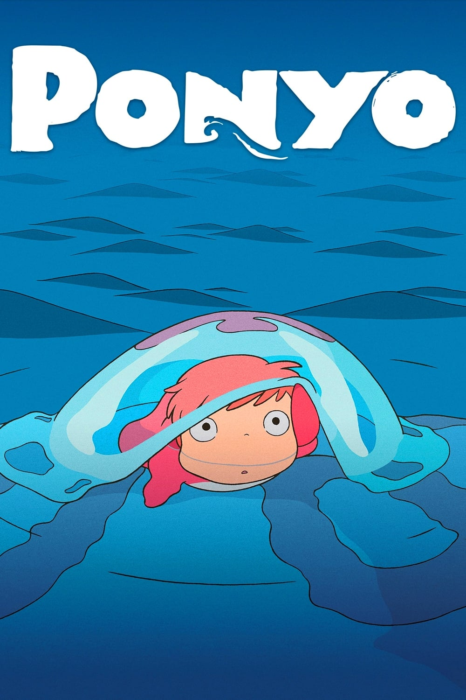

(2003) Premio de la Academia a la Mejor Película de Animación
(2002) Oso de oro en el Festival Internacional de Cine de Berlín
(2002) Premio a la Mejor Película en los Premios de la Academia de Cine de Japón
(2003) Premio BAFTA a la Mejor Película de Animación
(2003) Premio Annie a la Mejor Película de Animación

(1998) Premio a la Mejor Película en los Premios de la Academia de Cine de Japón
(1999) Premio BAFTA a la Mejor Película de Animación
(1999) Premio Annie a la Mejor Película de Animación
(1989) Premio Kinema Junpo a la Mejor Película
(1989) Premio Mainichi FIlm Award a la Mejor Película de Animación
(1990) Premio BAFTA a la Mejor Película Infantil
(1986) Premio Animage Anime Grand Prix
(1987) Premio a la Mejor Película en los Premios de la Academia de Cine de Japón
(2008) Premio a la Mejor Película en el Festival Internacional de Cine de Venecia
(2009) Premio Annie a la mejor película de animación
